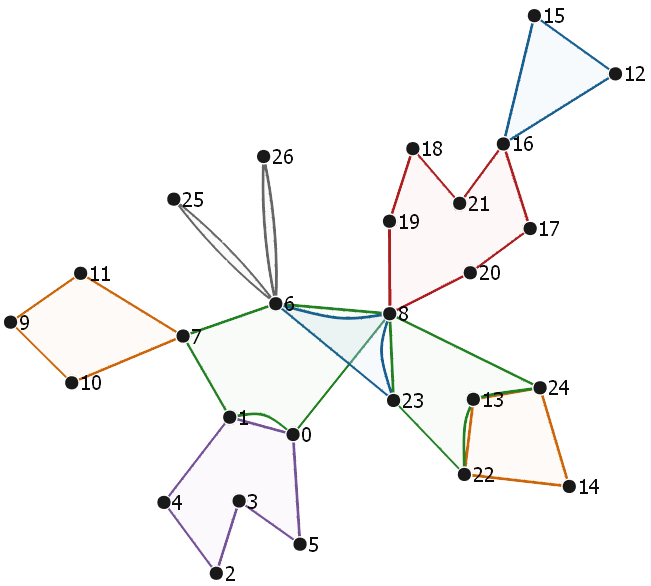
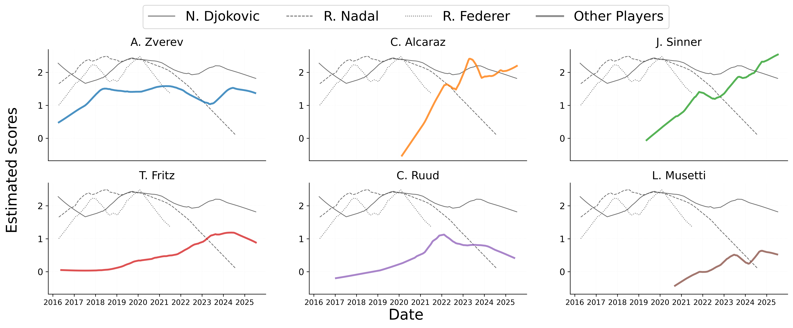

Monthly tracking
Deep ranking for professional tennis
Forecasting ATP match outcomes with dynamic hypergraph ranking.
Hypergraph separates intrinsic player strength from nonlinear match context, turning a decade of ATP data into probability forecasts that can be compared model by model.
Model comparison
One test season. Three ranking philosophies.
The demo uses the original rolling split: train through June 2023, tune on the next year, and evaluate on the recent ATP test window.
Interactive prediction book
Every match is an item. Every model gives a probability.
Search the held-out test matches, inspect probability bars, and compare DHR against PlusDC and Bradley-Terry on the same fixture.
Feature design
66 dimensions of match context
MI captures tournament setting, PP captures player profile, and TS captures rolling technical form over the prior three months.
Research narrative
From player strength to context-aware probability.
Classical Bradley-Terry models rank players with one intrinsic utility. Hypergraph keeps that interpretability but adds an edge-dependent nonlinear component, so surface, tournament level, recent serve-return form, and player profile can change the matchup probability.
21,385ATP singles matches
389players in the study
2016–2025SofaScore data window

Deep Heterogeneous Ranking
DHR models each comparison as a hyperedge with item utilities and heterogeneous, nonlinear covariate effects. In tennis, the result is a probability engine that benchmarks against BT and PlusDC on the same matches.
Evidence gallery
Research charts behind the demo.


